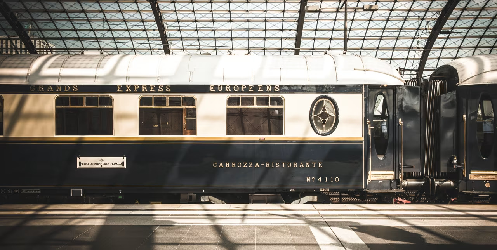

Orient Express

L’Orient-Express est un train de luxe créé à la fin du XIXᵉ siècle qui reliait Paris à Istanbul en traversant plusieurs pays d’Europe.
Il était connu pour son confort exceptionnel et son ambiance très chic, attirant surtout des voyageurs riches et importants.
Avec le temps, il est devenu mythique grâce à des histoires et des romans célèbres, notamment Le Crime de l’Orient-Express d’Agatha Christie, et symbolise aujourd’hui le voyage élégant et mystérieux d’autrefois.
L'histoire
L’Orient-Express est lancé en 1883 par la Compagnie Internationale des Wagons-Lits, avec un premier trajet entre Paris et Constantinople.
Au début du XXᵉ siècle, surtout dans les années 1900–1930, il connaît son âge d’or et devient le train du luxe européen.
En 1914, la Première Guerre mondiale interrompt son service, puis il reprend après le conflit. Dans les années 1930.
Après la Seconde Guerre mondiale (1939–1945), le train décline peu à peu, et le service original s’arrête définitivement en 1977, laissant place à sa légende.
Aujourd'hui
L’Orient-Express “original”, celui qui faisait Paris–Istanbul régulièrement, n’est plus en service depuis 1977.
Mais le nom n’a pas disparu : aujourd’hui, il existe des trains de luxe touristiques (comme le Venice Simplon-Orient-Express) qui roulent encore sur certains trajets, avec le même style chic et ancien.